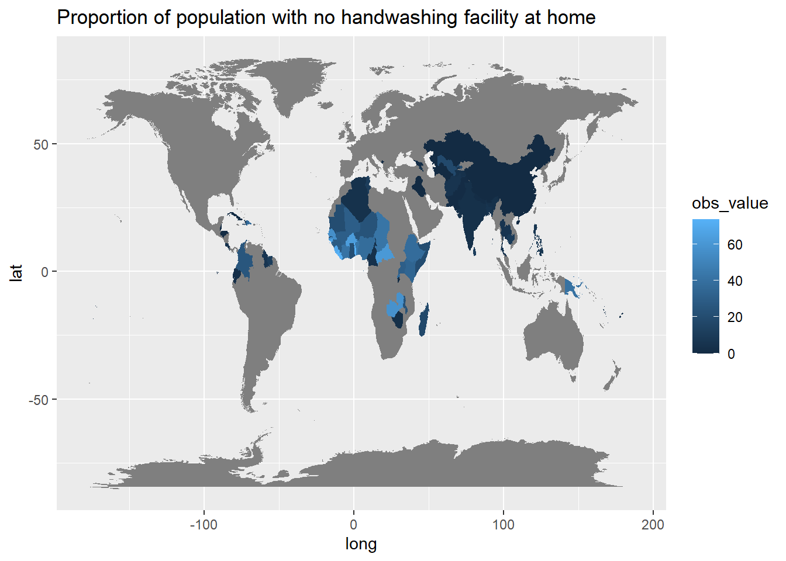
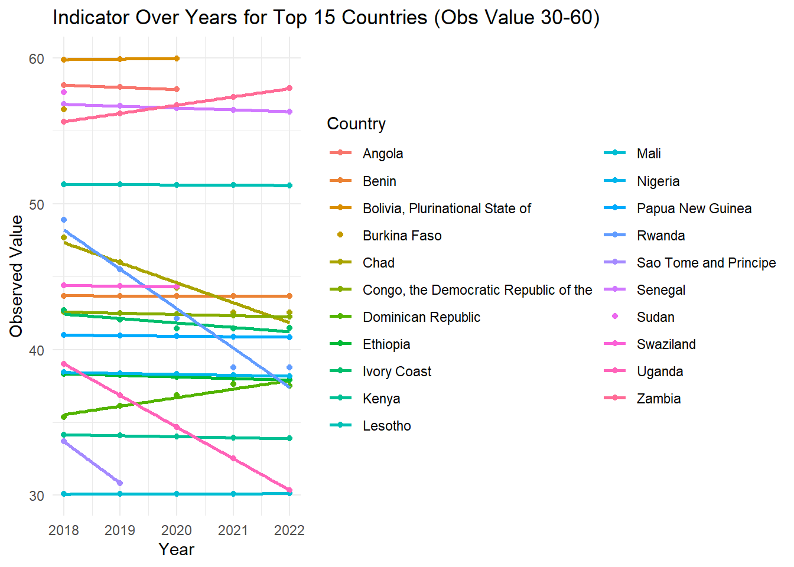

Quarto Assignment MT5000
Analysis of Proportion of population with no handwashing facility
Map Visualization of Handwashing Facilities in 2015
The map below displays the proportion of the population without access to handwashing facilities across different countries in the year 2015. This visualization helps identify geographical disparities in access to basic sanitation facilities.
Analysis of Observed Values Greater Than 50 Between year 2018 and 2022
This bar chart shows the average observed values that are greater than 50 from 2018 to 2022, summarized by country. It highlights regions with significant challenges in improving handwashing access.
The scatter plot
Illustrates how the proportion of the population with access to handwashing facilities has evolved over the selected period. Each point on the plot represents the observed value for a specific year and country, while the lines indicate the trend across the years, determined through linear regression analysis. This visualization helps us identify patterns of improvement or decline and can serve as a basis for more detailed investigation into the factors influencing these changes.
The analysis focuses on the top 30 countries with the most data points within the specified range, ensuring that our insights are based on robust and consistent reporting across the period. The linear regression lines provide a visual representation of the general trend for each country, allowing us to quickly ascertain whether access is improving, declining, or remaining relatively stable.

Conclusion Based on the Visualizations:
Map Visualization of Handwashing Facilities in 2015:
Conclusion: The map highlights regions where access to handwashing facilities is critically low. Countries with lower proportions could be identified as priority areas for interventions to improve sanitation and public health. The geographical disparities evident from the map suggest targeted policy measures could be beneficial.
Analysis of Observed Values Greater Than 50 Between 2018 and 2022:
The bar chart indicates that despite efforts, several countries still report high averages of populations lacking access to handwashing facilities. These consistently high values suggest that certain regions may face systemic barriers to improving these facilities, which could include economic, logistical, or governance-related challenges.
Scatter Plot with Linear Regression Analysis:
The scatter plot, supplemented by linear regression lines, reveals the trend of access to handwashing facilities over time for the top 30 countries with the most consistent data reporting. Countries where the trend line shows an upward trajectory are making progress, whereas those with flat or downward trends might be stagnating or regressing. This suggests the effectiveness of interventions is variable, and continued monitoring is essential to ensure sustained improvements.